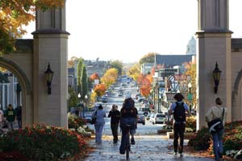
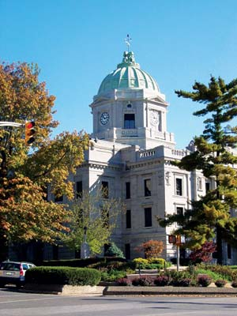

Bloomington residents describe their hometown with words such as “homey,” “affordable” and “politically active.” Developer Matt Press, who went away for college but ultimately returned, says, “This town spoke to me. I can think of few other places that combine culture, nature and community the way Bloomington does.”
You can feel what he’s talking about as you walk through the 100-vendor farmers market that sits in the shadow of the Monroe County Courthouse that towers over the town square.
There’s civic energy here - an unusually strong sense of pride and participation that asserted itself several decades ago when the downtown area had numerous vacancies and buildings were in disrepair. City leaders wanted to create a place where their children would stay and live - a place that would attract sustainable, job-producing businesses. Since then, the city has refurbished or constructed about 200 buildings, breathing new life into the city’s core.
The signature downtown event is the annual Lotus World Music and Arts Festival, a two-day show that rocks Bloomington every fall. Musicians from all over the world offer more than 80 performances in numerous venues. Plus, one of America’s most respected music schools is at Indiana University, and with performances by local and touring bands, you can find music every day of the year - often for free.
Bikes are another icon of daily life in Bloomington. At the Community Bicycle Project headquarters, “gently used” bikes are donated, rebuilt and resold ready for the road. Volunteers “earn a bike” by working for the project, at the same time learning the valuable skills of bicycle repair and maintenance.
And every spring since 1951, the Little 500 has matched 33 qualifying teams against each other in a 200 lap (about 50 mile) bicycle race. Bicycling legend Lance Armstrong calls it “the coolest event he’s ever attended.” Since the first Little 500 race, more than $1 million has been raised to support scholarships for working students.
Repeatedly awarded the “Tree City USA” distinction for meeting forestry stewardship standards determined by The National Arbor Day Foundation, Bloomington is also known for creating wildlife habitat in naturalized back yards and parks. More than 200 homes are certified by the National Wildlife Federation as wildlife habitat - a form of diverse landscaping that includes native plants and provides food and shelter to animals.
“I’ve seen 18 different species of birds in my yard, including cedar waxwings and brightly colored migratory birds,” says Lucille Bertuccio, director of the Center for Sustainable Living, a nonprofit organization formed by Bloomington residents in 1992 to create services, projects and networking opportunities for ecologically sustainable lifestyles.
Do you live in Bloomington? Have you visited? Please post your comments below.
Population: 68,779
Climate: Mild, four-season weather. January average temperature: 30 degrees. July average: 76 degrees.
Median House Value: $150,600
Natural Assets: Elevation: 840 feet. Near various large wilderness areas, including Hoosier National Forest. Great hiking, picnicking and fall colors. Nearby lakes are great for canoeing, kayaking and bass fishing.
Sustainable Initiatives: The city signed the U.S. Mayors Climate Protection Agreement to meet the standards of the Kyoto Protocol, an international agreement to address climate change by reducing greenhouse gas emissions. Bloomington also has a major sustainable development program empowered by a citizen/government commission.
|
 BMCCVB A view of downtown Bloomington from Indiana University. |
 BMCCVB Bloomington’s Monroe County Courthouse |
|